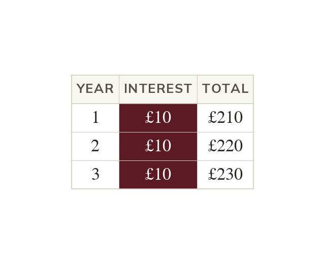

Simple interest adds a fixed amount each period
Simple interest is found on the original amount only. The same interest is added every period. e.g. at earns every year.
Simple interest is calculated once, on the original amount only, and that same amount of interest is added every period (usually a year) - it never grows or shrinks between periods. One period's interest is found using the multiplier method from Lesson : original × rate as a decimal. Over n periods, the total simple interest is n times that one-period amount, since the same interest repeats unchanged each time.